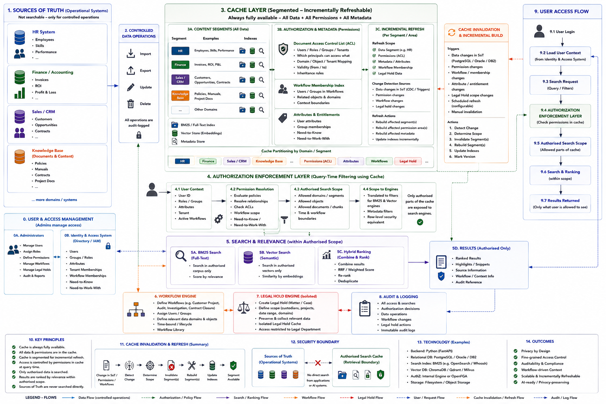

This project is planned as a free, self-hostable Python middleware for making enterprise data searchable and AI-accessible without making operational Sources of Truth directly searchable. The project combines enterprise data integration, fine-grained authorization, segmented and incrementally refreshable caches, BM25 full-text retrieval, vector similarity search, hybrid ranking, workflow-derived context, Legal Hold, auditability, and privacy-aware AI/RAG access.
This project is not intended to compete with established open-source projects such as OpenSearch, Qdrant, OpenFGA, Keycloak, Open Policy Agent (OPA), or Presidio. Instead, it builds on and integrates their proven capabilities, extending the overall approach with additional concepts for privacy-aware enterprise retrieval, incremental authorization-aware caching, workflow-based access, Legal Hold, and controlled AI/RAG access to enterprise data. The goal is to complement the existing open-source ecosystem, learn from it, and, wherever possible, collaborate with and contribute back to the communities behind these projects.
Allthough I prefer languages only following the functional paradigm I choosed Python, a multi-paradigm programming language.Having multiple paradigms allows to use the paradigms in the plaaces they are the best choice. On the other side one python file should use one of the paradigms not mixed. If something needs another paradigm it has to be placed in another new or existing file which uses the paradigm. The other thing is that Python is more and more popular and I like to reach many people who like to learn and whose main language is Python. And Python is that language used in most AI projects.
